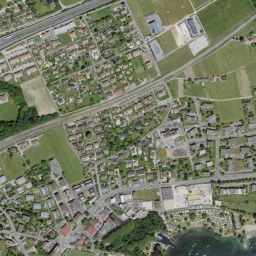
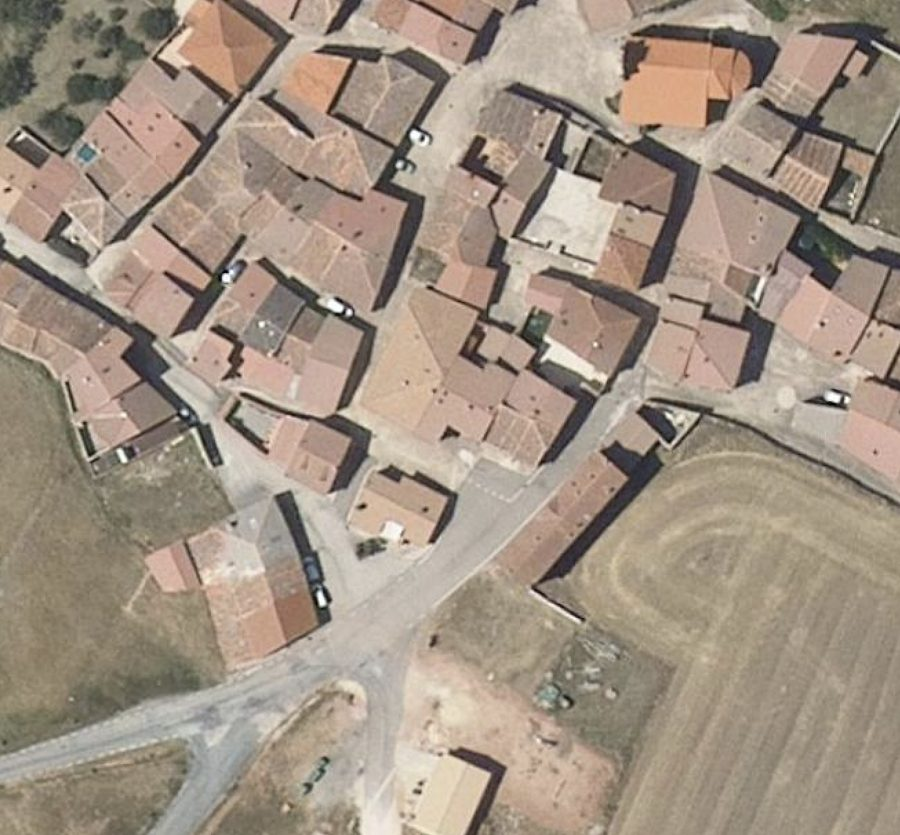

The highest-detail base imagery — national aerial orthophotos from 20+ countries, 20 cm to 1 cm GSD, harmonised into one layer.
For the finest detail, nothing beats aircraft. Many governments fly national aerial surveys at 5–25 cm and publish the orthoimagery — but it is scattered across incompatible national portals, formats and projections. SkySpera ingests and harmonises aerial coverage from 20+ countries into one consistent layer, from 20 cm down to 1 cm per pixel, with some sources refreshing continuously. Where available, aerial provides the ground-truth detail layer beneath SkySpera's satellite products.




Tell us the ground you need to watch — we'll show you what SkySpera can do with it.
Talk to us